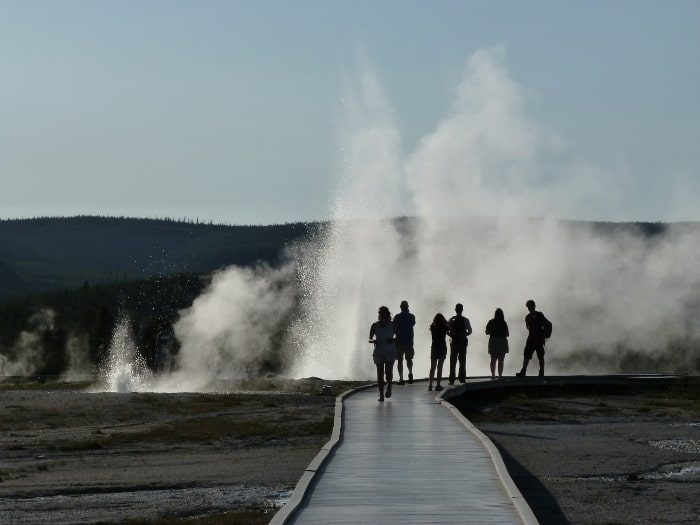
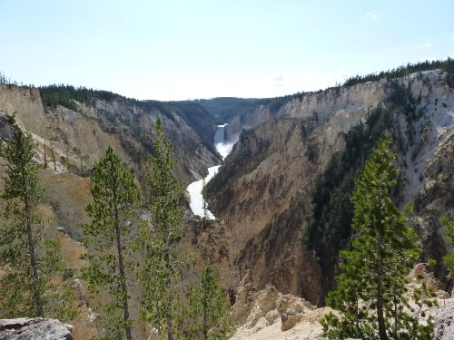
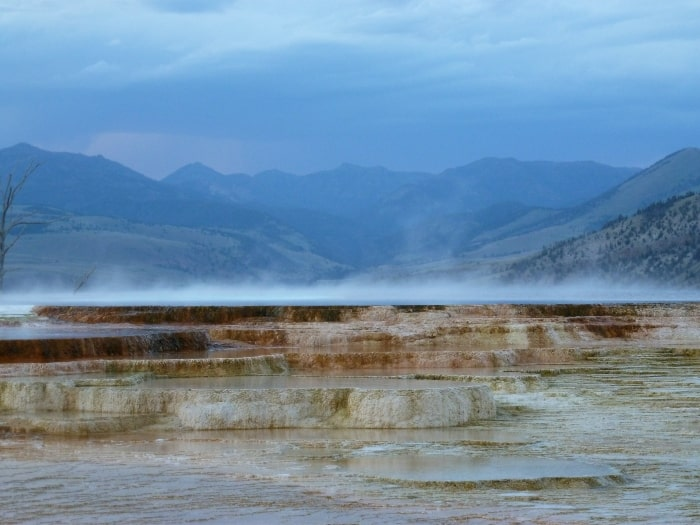
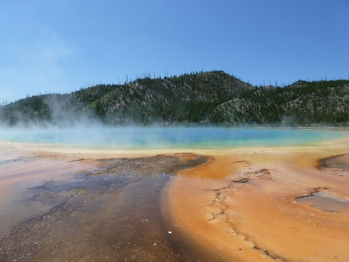

×

The Geysers
Are plentiful! There are more that 500 geysers at Yellowstone!
ɠɑɪ/ɑɪ/: 'i' in tide
/ər/: 'er' in letterzər -
a hot spring characterized by an intermittent discharge of water ejected turbulently and accompanied by steam.
The world's first National Park - Established in 1892
Yellowstone's Grand Canyon, lakes, rivers, and waterfalls. Yellowstone's supervolcano and half the world's hydrothermal features; extraordinary geysers, hot springs, mudpots, travertine terraces, and fumaroles.. and of course, the wildlife!


